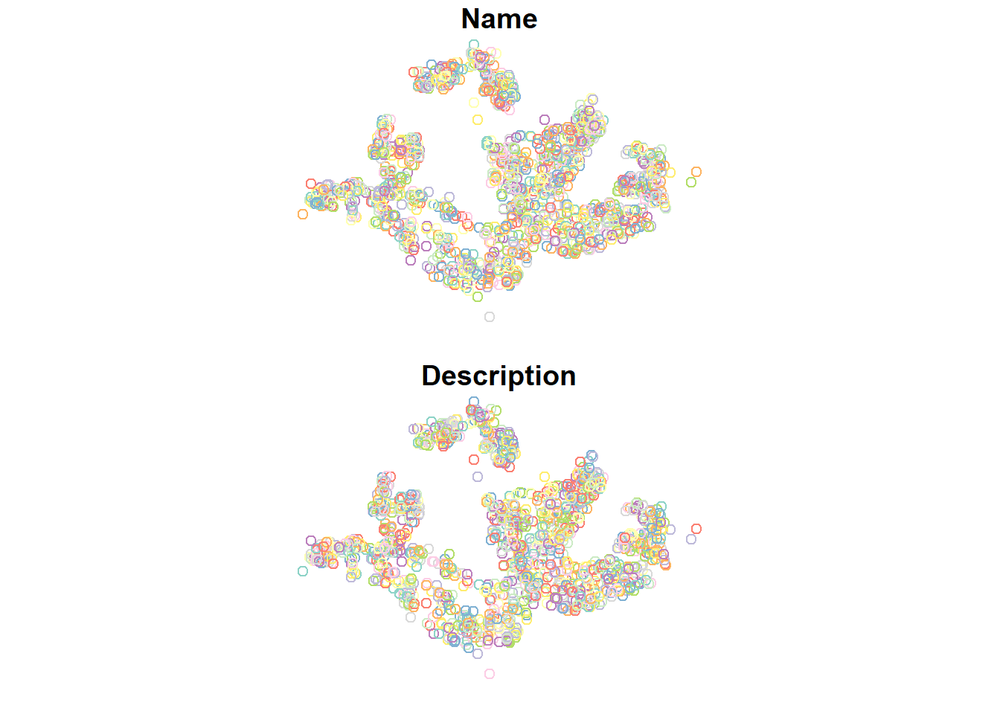
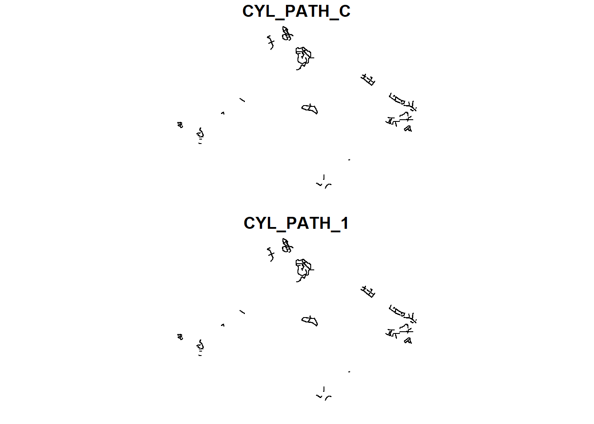
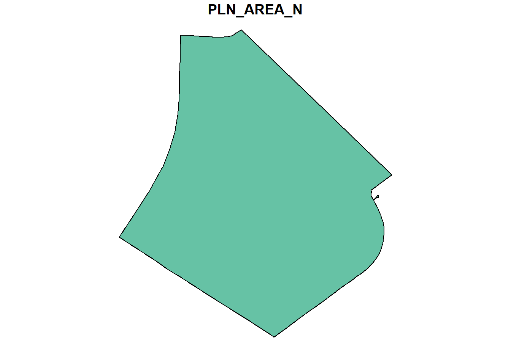
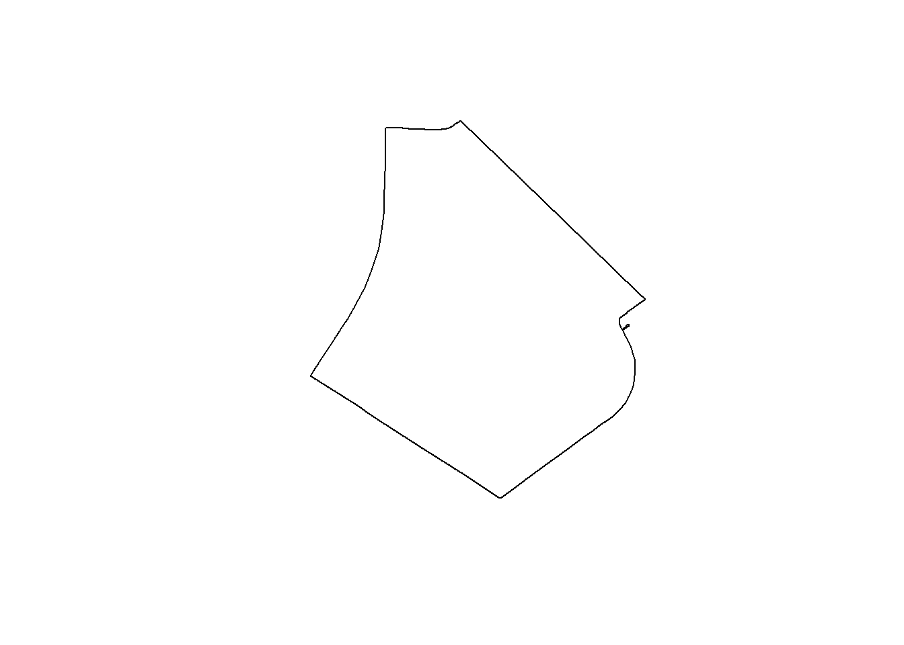
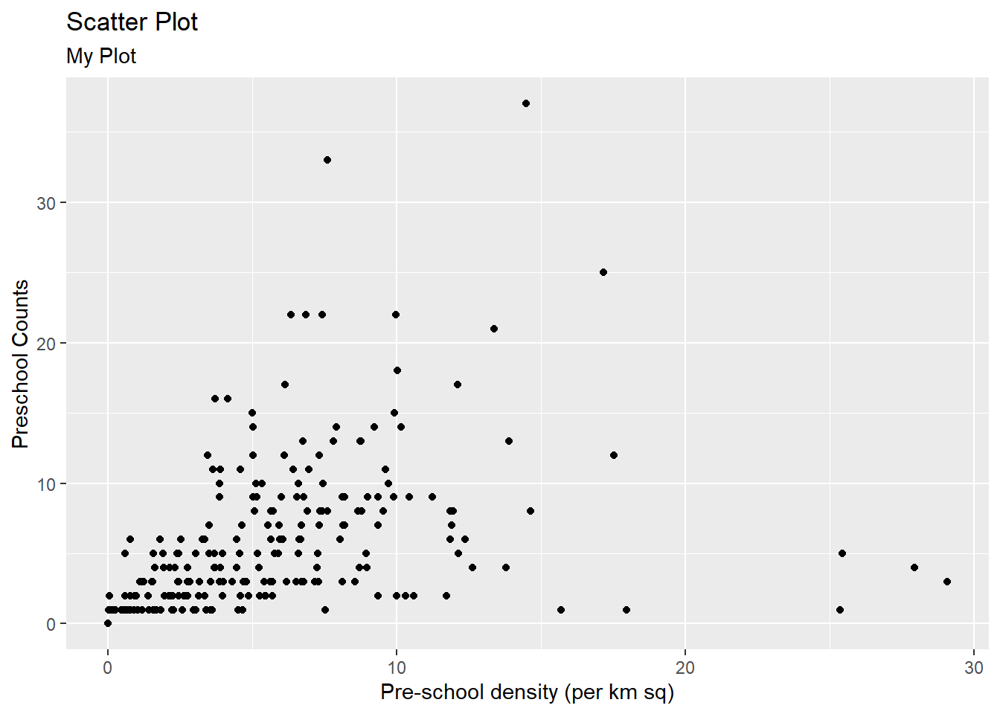

pacman::p_load(sf,tidyverse)Hand on ex 1 - Chap 1 Geodata wrangling
Overview Ex 1
Step 1: Load packages
Step 2: Import Geo spatial Data
Import shapefile into R as a polygon feature dataframe :
mpsz <- st_read(dsn = "data/geospatial", layer = "MP14_SUBZONE_WEB_PL")Reading layer `MP14_SUBZONE_WEB_PL' from data source
`D:\f4sared\ISSS624\hands_on_ex\ex_1\data\geospatial' using driver `ESRI Shapefile'
Simple feature collection with 323 features and 15 fields
Geometry type: MULTIPOLYGON
Dimension: XY
Bounding box: xmin: 2667.538 ymin: 15748.72 xmax: 56396.44 ymax: 50256.33
Projected CRS: SVY21Import shapefile into R as a line feature dataframe :
cyclingpath <- st_read(dsn = "data/geospatial", layer = "CyclingPath")Reading layer `CyclingPath' from data source
`D:\f4sared\ISSS624\hands_on_ex\ex_1\data\geospatial' using driver `ESRI Shapefile'
Simple feature collection with 1625 features and 2 fields
Geometry type: LINESTRING
Dimension: XY
Bounding box: xmin: 12711.19 ymin: 28711.33 xmax: 42626.09 ymax: 48948.15
Projected CRS: SVY21Import KML into R as a Point format:
preschool <- st_read("data/geospatial/pre-schools-location-kml.kml")Reading layer `PRESCHOOLS_LOCATION' from data source
`D:\f4sared\ISSS624\hands_on_ex\ex_1\data\geospatial\pre-schools-location-kml.kml'
using driver `KML'
Simple feature collection with 1359 features and 2 fields
Geometry type: POINT
Dimension: XYZ
Bounding box: xmin: 103.6824 ymin: 1.248403 xmax: 103.9897 ymax: 1.462134
z_range: zmin: 0 zmax: 0
Geodetic CRS: WGS 84Step 3: Check content of the data frame
This function provides a simple overview of the dataframe:
st_geometry(mpsz)Geometry set for 323 features
Geometry type: MULTIPOLYGON
Dimension: XY
Bounding box: xmin: 2667.538 ymin: 15748.72 xmax: 56396.44 ymax: 50256.33
Projected CRS: SVY21
First 5 geometries:MULTIPOLYGON (((31495.56 30140.01, 31980.96 296...MULTIPOLYGON (((29092.28 30021.89, 29119.64 300...MULTIPOLYGON (((29932.33 29879.12, 29947.32 298...MULTIPOLYGON (((27131.28 30059.73, 27088.33 297...MULTIPOLYGON (((26451.03 30396.46, 26440.47 303...This function gives a detailed breakdown of the columns and the data within the column:
glimpse(mpsz)Rows: 323
Columns: 16
$ OBJECTID <int> 1, 2, 3, 4, 5, 6, 7, 8, 9, 10, 11, 12, 13, 14, 15, 16, 17, …
$ SUBZONE_NO <int> 1, 1, 3, 8, 3, 7, 9, 2, 13, 7, 12, 6, 1, 5, 1, 1, 3, 2, 2, …
$ SUBZONE_N <chr> "MARINA SOUTH", "PEARL'S HILL", "BOAT QUAY", "HENDERSON HIL…
$ SUBZONE_C <chr> "MSSZ01", "OTSZ01", "SRSZ03", "BMSZ08", "BMSZ03", "BMSZ07",…
$ CA_IND <chr> "Y", "Y", "Y", "N", "N", "N", "N", "Y", "N", "N", "N", "N",…
$ PLN_AREA_N <chr> "MARINA SOUTH", "OUTRAM", "SINGAPORE RIVER", "BUKIT MERAH",…
$ PLN_AREA_C <chr> "MS", "OT", "SR", "BM", "BM", "BM", "BM", "SR", "QT", "QT",…
$ REGION_N <chr> "CENTRAL REGION", "CENTRAL REGION", "CENTRAL REGION", "CENT…
$ REGION_C <chr> "CR", "CR", "CR", "CR", "CR", "CR", "CR", "CR", "CR", "CR",…
$ INC_CRC <chr> "5ED7EB253F99252E", "8C7149B9EB32EEFC", "C35FEFF02B13E0E5",…
$ FMEL_UPD_D <date> 2014-12-05, 2014-12-05, 2014-12-05, 2014-12-05, 2014-12-05…
$ X_ADDR <dbl> 31595.84, 28679.06, 29654.96, 26782.83, 26201.96, 25358.82,…
$ Y_ADDR <dbl> 29220.19, 29782.05, 29974.66, 29933.77, 30005.70, 29991.38,…
$ SHAPE_Leng <dbl> 5267.381, 3506.107, 1740.926, 3313.625, 2825.594, 4428.913,…
$ SHAPE_Area <dbl> 1630379.27, 559816.25, 160807.50, 595428.89, 387429.44, 103…
$ geometry <MULTIPOLYGON [m]> MULTIPOLYGON (((31495.56 30..., MULTIPOLYGON (…Here we will take a detailed look at the first 5 rows of the dataset:
head(mpsz, n=5)Simple feature collection with 5 features and 15 fields
Geometry type: MULTIPOLYGON
Dimension: XY
Bounding box: xmin: 25867.68 ymin: 28369.47 xmax: 32362.39 ymax: 30435.54
Projected CRS: SVY21
OBJECTID SUBZONE_NO SUBZONE_N SUBZONE_C CA_IND PLN_AREA_N
1 1 1 MARINA SOUTH MSSZ01 Y MARINA SOUTH
2 2 1 PEARL'S HILL OTSZ01 Y OUTRAM
3 3 3 BOAT QUAY SRSZ03 Y SINGAPORE RIVER
4 4 8 HENDERSON HILL BMSZ08 N BUKIT MERAH
5 5 3 REDHILL BMSZ03 N BUKIT MERAH
PLN_AREA_C REGION_N REGION_C INC_CRC FMEL_UPD_D X_ADDR
1 MS CENTRAL REGION CR 5ED7EB253F99252E 2014-12-05 31595.84
2 OT CENTRAL REGION CR 8C7149B9EB32EEFC 2014-12-05 28679.06
3 SR CENTRAL REGION CR C35FEFF02B13E0E5 2014-12-05 29654.96
4 BM CENTRAL REGION CR 3775D82C5DDBEFBD 2014-12-05 26782.83
5 BM CENTRAL REGION CR 85D9ABEF0A40678F 2014-12-05 26201.96
Y_ADDR SHAPE_Leng SHAPE_Area geometry
1 29220.19 5267.381 1630379.3 MULTIPOLYGON (((31495.56 30...
2 29782.05 3506.107 559816.2 MULTIPOLYGON (((29092.28 30...
3 29974.66 1740.926 160807.5 MULTIPOLYGON (((29932.33 29...
4 29933.77 3313.625 595428.9 MULTIPOLYGON (((27131.28 30...
5 30005.70 2825.594 387429.4 MULTIPOLYGON (((26451.03 30...Step 4: Plotting the data
Below command will plot a map for each of the columns:
plot(mpsz)Warning: plotting the first 9 out of 15 attributes; use max.plot = 15 to plot
all
In order to plot the whole map only, we use the following:
plot(st_geometry(mpsz))
Also we can choose to plot based on a specific column or “feature”:
plot(mpsz["PLN_AREA_N"])
Note***
plot() is only meant for a quick look, for cartographic quality, we should use other packages such as tamp.
Step 5: Working with projections
Projection is important because we want to use geospatial data that are of similar coordinate system.
The following code will show how to project from one coordinate system to another coordinate system.
Check the coordinate reference system as follow:
st_crs(mpsz)Coordinate Reference System:
User input: SVY21
wkt:
PROJCRS["SVY21",
BASEGEOGCRS["SVY21[WGS84]",
DATUM["World Geodetic System 1984",
ELLIPSOID["WGS 84",6378137,298.257223563,
LENGTHUNIT["metre",1]],
ID["EPSG",6326]],
PRIMEM["Greenwich",0,
ANGLEUNIT["Degree",0.0174532925199433]]],
CONVERSION["unnamed",
METHOD["Transverse Mercator",
ID["EPSG",9807]],
PARAMETER["Latitude of natural origin",1.36666666666667,
ANGLEUNIT["Degree",0.0174532925199433],
ID["EPSG",8801]],
PARAMETER["Longitude of natural origin",103.833333333333,
ANGLEUNIT["Degree",0.0174532925199433],
ID["EPSG",8802]],
PARAMETER["Scale factor at natural origin",1,
SCALEUNIT["unity",1],
ID["EPSG",8805]],
PARAMETER["False easting",28001.642,
LENGTHUNIT["metre",1],
ID["EPSG",8806]],
PARAMETER["False northing",38744.572,
LENGTHUNIT["metre",1],
ID["EPSG",8807]]],
CS[Cartesian,2],
AXIS["(E)",east,
ORDER[1],
LENGTHUNIT["metre",1,
ID["EPSG",9001]]],
AXIS["(N)",north,
ORDER[2],
LENGTHUNIT["metre",1,
ID["EPSG",9001]]]]Note***
EPSG stands for “European Petroleum Survey Group”
mpsz3414 <- st_set_crs(mpsz, 3414)Warning: st_crs<- : replacing crs does not reproject data; use st_transform for
thatQuestion to self: Why is there a warning above ?
Below we will set the correct EPSG code to 3414:
st_crs(mpsz3414)Coordinate Reference System:
User input: EPSG:3414
wkt:
PROJCRS["SVY21 / Singapore TM",
BASEGEOGCRS["SVY21",
DATUM["SVY21",
ELLIPSOID["WGS 84",6378137,298.257223563,
LENGTHUNIT["metre",1]]],
PRIMEM["Greenwich",0,
ANGLEUNIT["degree",0.0174532925199433]],
ID["EPSG",4757]],
CONVERSION["Singapore Transverse Mercator",
METHOD["Transverse Mercator",
ID["EPSG",9807]],
PARAMETER["Latitude of natural origin",1.36666666666667,
ANGLEUNIT["degree",0.0174532925199433],
ID["EPSG",8801]],
PARAMETER["Longitude of natural origin",103.833333333333,
ANGLEUNIT["degree",0.0174532925199433],
ID["EPSG",8802]],
PARAMETER["Scale factor at natural origin",1,
SCALEUNIT["unity",1],
ID["EPSG",8805]],
PARAMETER["False easting",28001.642,
LENGTHUNIT["metre",1],
ID["EPSG",8806]],
PARAMETER["False northing",38744.572,
LENGTHUNIT["metre",1],
ID["EPSG",8807]]],
CS[Cartesian,2],
AXIS["northing (N)",north,
ORDER[1],
LENGTHUNIT["metre",1]],
AXIS["easting (E)",east,
ORDER[2],
LENGTHUNIT["metre",1]],
USAGE[
SCOPE["Cadastre, engineering survey, topographic mapping."],
AREA["Singapore - onshore and offshore."],
BBOX[1.13,103.59,1.47,104.07]],
ID["EPSG",3414]]Next we will convert the projection of preschool from wsg84 to svy21:
We will take a loot at the CRS o the preschool:
st_crs(preschool)Coordinate Reference System:
User input: WGS 84
wkt:
GEOGCRS["WGS 84",
DATUM["World Geodetic System 1984",
ELLIPSOID["WGS 84",6378137,298.257223563,
LENGTHUNIT["metre",1]]],
PRIMEM["Greenwich",0,
ANGLEUNIT["degree",0.0174532925199433]],
CS[ellipsoidal,2],
AXIS["geodetic latitude (Lat)",north,
ORDER[1],
ANGLEUNIT["degree",0.0174532925199433]],
AXIS["geodetic longitude (Lon)",east,
ORDER[2],
ANGLEUNIT["degree",0.0174532925199433]],
ID["EPSG",4326]]Now we will convert:
preschool3414 <- st_transform(preschool, crs=3414)We will now take a look at the converted geometry dataframe:
st_geometry(preschool3414)Geometry set for 1359 features
Geometry type: POINT
Dimension: XYZ
Bounding box: xmin: 11203.01 ymin: 25667.6 xmax: 45404.24 ymax: 49300.88
z_range: zmin: 0 zmax: 0
Projected CRS: SVY21 / Singapore TM
First 5 geometries:POINT Z (19997.26 32333.17 0)POINT Z (19126.75 33114.35 0)POINT Z (20345.12 31934.56 0)POINT Z (20400.31 31952.36 0)POINT Z (19810.78 33140.31 0)We can see that after conversion, the values of the geometry are now different:
glimpse(preschool)Rows: 1,359
Columns: 3
$ Name <chr> "kml_1", "kml_2", "kml_3", "kml_4", "kml_5", "kml_6", "kml…
$ Description <chr> "<center><table><tr><th colspan='2' align='center'><em>Att…
$ geometry <POINT [°]> POINT Z (103.7614 1.308683 0), POINT Z (103.7536 1.3…glimpse(preschool3414)Rows: 1,359
Columns: 3
$ Name <chr> "kml_1", "kml_2", "kml_3", "kml_4", "kml_5", "kml_6", "kml…
$ Description <chr> "<center><table><tr><th colspan='2' align='center'><em>Att…
$ geometry <POINT [m]> POINT Z (19997.26 32333.17 0), POINT Z (19126.75 331…Just for interest, we will plot the preschool data:
plot(preschool3414)
Step 6: Importing and Converting Aspatial Data
We first import the csv file:
listings <- read_csv("data/aspatial/listings.csv")Rows: 4252 Columns: 16
── Column specification ────────────────────────────────────────────────────────
Delimiter: ","
chr (5): name, host_name, neighbourhood_group, neighbourhood, room_type
dbl (10): id, host_id, latitude, longitude, price, minimum_nights, number_o...
date (1): last_review
ℹ Use `spec()` to retrieve the full column specification for this data.
ℹ Specify the column types or set `show_col_types = FALSE` to quiet this message.Next, we check if the files has been imported correctly:
**Here, we will assume that the coordinate data is in the degree format & in wgs84 system
**WGS stands for “World Geodetic System”
list(listings)[[1]]
# A tibble: 4,252 × 16
id name host_id host_…¹ neigh…² neigh…³ latit…⁴ longi…⁵ room_…⁶ price
<dbl> <chr> <dbl> <chr> <chr> <chr> <dbl> <dbl> <chr> <dbl>
1 50646 Pleasan… 227796 Sujatha Centra… Bukit … 1.33 104. Privat… 80
2 71609 Ensuite… 367042 Belinda East R… Tampin… 1.35 104. Privat… 178
3 71896 B&B Ro… 367042 Belinda East R… Tampin… 1.35 104. Privat… 81
4 71903 Room 2-… 367042 Belinda East R… Tampin… 1.35 104. Privat… 81
5 275343 Conveni… 1439258 Joyce Centra… Bukit … 1.29 104. Privat… 52
6 275344 15 mins… 1439258 Joyce Centra… Bukit … 1.29 104. Privat… 40
7 294281 5 mins … 1521514 Elizab… Centra… Newton 1.31 104. Privat… 72
8 301247 Nice ro… 1552002 Rahul Centra… Geylang 1.32 104. Privat… 41
9 324945 20 Mins… 1439258 Joyce Centra… Bukit … 1.29 104. Privat… 49
10 330089 Accomo@… 1439258 Joyce Centra… Bukit … 1.29 104. Privat… 49
# … with 4,242 more rows, 6 more variables: minimum_nights <dbl>,
# number_of_reviews <dbl>, last_review <date>, reviews_per_month <dbl>,
# calculated_host_listings_count <dbl>, availability_365 <dbl>, and
# abbreviated variable names ¹host_name, ²neighbourhood_group,
# ³neighbourhood, ⁴latitude, ⁵longitude, ⁶room_typeNext, we will convert the imported csv file to a dataframe:
We will first convert listings into a dataframe, then convert/project accordingly.
listings_sf <- st_as_sf(listings, coords = c("longitude","latitude"), crs=4326) %>% st_transform(crs=3414)Next we will take a look at the features and columns:
glimpse(listings_sf)Rows: 4,252
Columns: 15
$ id <dbl> 50646, 71609, 71896, 71903, 275343, 275…
$ name <chr> "Pleasant Room along Bukit Timah", "Ens…
$ host_id <dbl> 227796, 367042, 367042, 367042, 1439258…
$ host_name <chr> "Sujatha", "Belinda", "Belinda", "Belin…
$ neighbourhood_group <chr> "Central Region", "East Region", "East …
$ neighbourhood <chr> "Bukit Timah", "Tampines", "Tampines", …
$ room_type <chr> "Private room", "Private room", "Privat…
$ price <dbl> 80, 178, 81, 81, 52, 40, 72, 41, 49, 49…
$ minimum_nights <dbl> 90, 90, 90, 90, 14, 14, 90, 8, 14, 14, …
$ number_of_reviews <dbl> 18, 20, 24, 48, 20, 13, 133, 105, 14, 1…
$ last_review <date> 2014-07-08, 2019-12-28, 2014-12-10, 20…
$ reviews_per_month <dbl> 0.22, 0.28, 0.33, 0.67, 0.20, 0.16, 1.2…
$ calculated_host_listings_count <dbl> 1, 4, 4, 4, 50, 50, 7, 1, 50, 50, 50, 4…
$ availability_365 <dbl> 365, 365, 365, 365, 353, 364, 365, 90, …
$ geometry <POINT [m]> POINT (22646.02 35167.9), POINT (…Step 7: Geoprocessing with sf package
In this section, we will learn to use geo processing functions, buffering and point in polygon count.
Buffering
buffer_cycling <- st_buffer(cyclingpath, dist = 5, nQuadSegs = 30)Just for interest, we will plot the buffered cycling path:
plot(buffer_cycling)
Next we calculate the area:
We will add this back to the main dataframe buffer_cycling
buffer_cycling$AREA <- st_area(buffer_cycling)Next, we will get the sum:
sum(buffer_cycling$AREA)773143.9 [m^2]We will also take a look at the newly added column “AREA”
glimpse(buffer_cycling)Rows: 1,625
Columns: 4
$ CYL_PATH_C <chr> "SBWG", "SBWG", "SBWG", "SBWG", "SBWG", "SBWG", "SBWG", "SB…
$ CYL_PATH_1 <chr> "Sembawang", "Sembawang", "Sembawang", "Sembawang", "Sembaw…
$ geometry <POLYGON [m]> POLYGON ((26829 47350.2, 26..., POLYGON ((26762.25 …
$ AREA [m^2] 547.08438 [m^2], 681.87931 [m^2], 432.75754 [m^2], 404.6815…Point in polygon count
We first check the dataframe:
Our dataframe consists of 323 areas
mpszSimple feature collection with 323 features and 15 fields
Geometry type: MULTIPOLYGON
Dimension: XY
Bounding box: xmin: 2667.538 ymin: 15748.72 xmax: 56396.44 ymax: 50256.33
Projected CRS: SVY21
First 10 features:
OBJECTID SUBZONE_NO SUBZONE_N SUBZONE_C CA_IND PLN_AREA_N
1 1 1 MARINA SOUTH MSSZ01 Y MARINA SOUTH
2 2 1 PEARL'S HILL OTSZ01 Y OUTRAM
3 3 3 BOAT QUAY SRSZ03 Y SINGAPORE RIVER
4 4 8 HENDERSON HILL BMSZ08 N BUKIT MERAH
5 5 3 REDHILL BMSZ03 N BUKIT MERAH
6 6 7 ALEXANDRA HILL BMSZ07 N BUKIT MERAH
7 7 9 BUKIT HO SWEE BMSZ09 N BUKIT MERAH
8 8 2 CLARKE QUAY SRSZ02 Y SINGAPORE RIVER
9 9 13 PASIR PANJANG 1 QTSZ13 N QUEENSTOWN
10 10 7 QUEENSWAY QTSZ07 N QUEENSTOWN
PLN_AREA_C REGION_N REGION_C INC_CRC FMEL_UPD_D X_ADDR
1 MS CENTRAL REGION CR 5ED7EB253F99252E 2014-12-05 31595.84
2 OT CENTRAL REGION CR 8C7149B9EB32EEFC 2014-12-05 28679.06
3 SR CENTRAL REGION CR C35FEFF02B13E0E5 2014-12-05 29654.96
4 BM CENTRAL REGION CR 3775D82C5DDBEFBD 2014-12-05 26782.83
5 BM CENTRAL REGION CR 85D9ABEF0A40678F 2014-12-05 26201.96
6 BM CENTRAL REGION CR 9D286521EF5E3B59 2014-12-05 25358.82
7 BM CENTRAL REGION CR 7839A8577144EFE2 2014-12-05 27680.06
8 SR CENTRAL REGION CR 48661DC0FBA09F7A 2014-12-05 29253.21
9 QT CENTRAL REGION CR 1F721290C421BFAB 2014-12-05 22077.34
10 QT CENTRAL REGION CR 3580D2AFFBEE914C 2014-12-05 24168.31
Y_ADDR SHAPE_Leng SHAPE_Area geometry
1 29220.19 5267.381 1630379.3 MULTIPOLYGON (((31495.56 30...
2 29782.05 3506.107 559816.2 MULTIPOLYGON (((29092.28 30...
3 29974.66 1740.926 160807.5 MULTIPOLYGON (((29932.33 29...
4 29933.77 3313.625 595428.9 MULTIPOLYGON (((27131.28 30...
5 30005.70 2825.594 387429.4 MULTIPOLYGON (((26451.03 30...
6 29991.38 4428.913 1030378.8 MULTIPOLYGON (((25899.7 297...
7 30230.86 3275.312 551732.0 MULTIPOLYGON (((27746.95 30...
8 30222.86 2208.619 290184.7 MULTIPOLYGON (((29351.26 29...
9 29893.78 6571.323 1084792.3 MULTIPOLYGON (((20996.49 30...
10 30104.18 3454.239 631644.3 MULTIPOLYGON (((24472.11 29...Perform first intersection:
This will produce a dataframe with 323 rows. In each of the rows, we will get the index of the preschool whose coordinates fall into our polygon area.
intersect <- st_intersects(mpsz3414, preschool3414)Store the counts into the main dataframe
mpsz3414$`PreSch Count`<- lengths(intersect)Check the summary statistics:
summary(mpsz3414$`PreSch Count`) Min. 1st Qu. Median Mean 3rd Qu. Max.
0.000 0.000 2.000 4.207 6.000 37.000 Next, we will list the top 3 planning zone with most number of preschools using the function below:
top_n(mpsz3414, 3, `PreSch Count`)Simple feature collection with 3 features and 16 fields
Geometry type: MULTIPOLYGON
Dimension: XY
Bounding box: xmin: 23449.05 ymin: 35966 xmax: 42940.57 ymax: 47996.47
Projected CRS: SVY21 / Singapore TM
OBJECTID SUBZONE_NO SUBZONE_N SUBZONE_C CA_IND PLN_AREA_N
1 189 2 TAMPINES EAST TMSZ02 N TAMPINES
2 272 3 SENGKANG TOWN CENTRE SESZ03 N SENGKANG
3 290 3 WOODLANDS EAST WDSZ03 N WOODLANDS
PLN_AREA_C REGION_N REGION_C INC_CRC FMEL_UPD_D X_ADDR
1 TM EAST REGION ER 21658EAAF84F4D8D 2014-12-05 41122.55
2 SE NORTH-EAST REGION NER 5A2D0E9E6B285069 2014-12-05 35163.81
3 WD NORTH REGION NR C90769E43EE6B0F2 2014-12-05 24506.64
Y_ADDR SHAPE_Leng SHAPE_Area geometry PreSch Count
1 37392.39 10180.624 4339824 MULTIPOLYGON (((42196.76 38... 33
2 41501.14 5216.401 1455508 MULTIPOLYGON (((35615.75 40... 25
3 46991.63 6603.608 2553464 MULTIPOLYGON (((24786.75 46... 37Calculate and save the area:
mpsz3414$Area <- mpsz3414 %>% st_area()testing <- mpsz3414 %>% st_area()
head(testing, n=20)Units: [m^2]
[1] 1630379.3 559816.2 160807.5 595428.9 387429.4 1030378.8
[7] 551732.0 290184.7 1084792.3 631644.3 1826848.6 293706.4
[13] 1844060.7 392563.3 506589.0 36707720.9 4207271.1 4963787.1
[19] 2206319.5 4919132.4Use the mutate function:
mpsz3414 <- mpsz3414 %>% mutate(`PreSch Density` = (`PreSch Count`/Area)*1000000)For fun and learning, we will try to plot a specific area such as queens town
specific_plot <- mpsz3414 %>% filter(PLN_AREA_C == "MS")
plot(specific_plot["PLN_AREA_N"])
plot(st_geometry(specific_plot))
Step 8: EDA Exploratory Data Analysis
Create a histogram to show the preschool density:
hist(mpsz3414$`PreSch Density`)
To get better plot, we will use ggplot:
ggplot(data=mpsz3414,
aes(x= as.numeric(`PreSch Density`)))+
geom_histogram(bins=20,
color="black",
fill="light blue") +
labs(title = "Are pre-school even distributed in Singapore?",
subtitle= "There are many planning sub-zones with a single pre-school, on the other hand, \nthere are two planning sub-zones with at least 20 pre-schools",
x = "Pre-school density (per km sq)",
y = "Frequency")
ggplot(data=mpsz3414,
aes(x= as.numeric(`PreSch Density`), y= as.numeric(`PreSch Count`)))+ geom_point()+
labs(title = "Scatter Plot",
subtitle= "My Plot",
x = "Pre-school density (per km sq)",
y = "Preschool Counts")
```